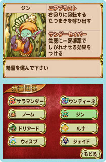

|  |
得意な武器や魔法の強さ、スピードなどの能力が異なる４人の主人公の中から1人を選んで、さっそくゲームスタート。
パステル調の２Ｄグラフィックや幻想的なＢＧＭは、最新作ながらシリーズ特有の雰囲気をキチンと残していて、『聖剣伝説』ファンなら30分もプレイすれば懐かしい気分になってくるはず。
魔物やアイテムもおなじみのものが登場するので、すんなりとゲームに入っていけます。もちろん、シリーズ初挑戦のプレイヤーにも豊富なヘルプ機能でフォローしてくれるので心配はいらないですよ。
戦闘はリアルタイムのアクションバトルです。フィールドやダンジョンを歩いていると、魔物が周囲から出現してきます。出現する場所はあらかじめチェックできるので、出現場所が近くの場合は有利な場所に移動して先制攻撃するのが基本中の基本かな。
また、こちらの攻撃を受けて吹き飛んだ魔物は、その勢いで他の魔物にぶつかるとダメージをあたえていきます。複数の魔物を相手にしているときは、このテクニックを使うのがオススメ。これが決まると気持ちいい！
武器は最初から使えるソードをはじめ、全部で４種類。それぞれに特徴があって戦闘中に使い分けることでより有利に戦えます。
|
そして、戦闘で主人公を魔法で助けてくれるのが『聖剣伝説』シリーズではおなじみの精霊たち。
８匹いる精霊はそれぞれ異なる魔法の力を持っており、冒険に出かける前にどれか１匹を連れて行くことができます。つまり、どの精霊を連れて行くかで戦い方に変化がでてくるというわけです。
アクションが少し苦手なプレイヤーなら、序盤はＨＰ回復ができる光の精霊ウィスプを連れていくと安心かも。
武器はＡボタンとＸボタン、精霊はＢボタン、そして回復アイテムなどはＹボタンと、メニュー画面を呼び出さずに各種操作がボタン１つですばやく行えるのも、アクションバトルのテンポを軽快にしてくれています。とってもいい感じです。
|
|